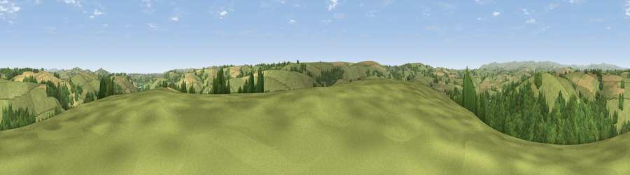

Viewpoint near Harbertonford
#9073 in England · top 21% of its area beats it · near HarbertonfordThe view, rendered

A 360° render of this exact spot computed from the terrain model, tree cover and land cover — summer colours, afternoon light, calibrated against photographs of famous viewpoints. Real trees, hedges and buildings will differ in detail.
The panorama
Grey silhouette: terrain skyline in each direction (720 bearings, Earth curvature and refraction included). Dashed green: skyline with trees (+15 m) and buildings (+8 m) as obstacles. Blue strip: how far the ground is visible on each bearing.
Where the view opens
Wedge length = distance to the farthest visible ground on that bearing (vegetation-aware). Rings at 10, 25 and 50 km.
What fills the view
55% grassland · 32% woodland · 13% cropland
Angular shares of the visible panorama (visual magnitude), not map area. Landscape diversity 0.43 (0–1 Shannon).
Key numbers
More beautiful places nearby
The staircase of upgrades: each row has a higher view potential than everything closer. Driving times are estimates from straight-line distance, calibrated against real road routing — check an actual route before setting out.
| Place | Direction | Drive | Score |
|---|---|---|---|
| Viewpoint near Ashprington | NE · 2 km | ~6 min | 66.4 |
| Bickleigh Brake | SSW · 3 km | ~7 min | 70.8 |
| Viewpoint near Moreleigh | WSW · 4 km | ~9 min | 74.0 |
| Viewpoint near Cornworthy | SE · 5 km | ~12 min | 75.2 |
| Viewpoint near Stoke Gabriel | ENE · 6 km | ~13 min | 79.1 |
| Beacon Hill | NE · 8 km | ~17 min | 82.3 |
| Viewpoint near Kingswear | ESE · 12 km | ~23 min | 83.8 |
| Viewpoint near Stokeinteignhead | NE · 19 km | ~32 min | 84.1 |
50.39181, -3.69057 · source: screening · position refined by local search. Computed location — check access rights before visiting.